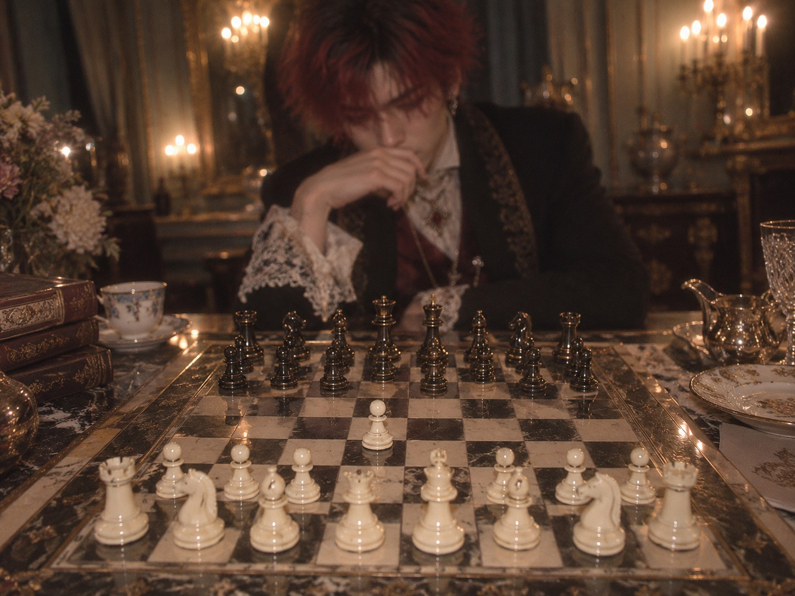
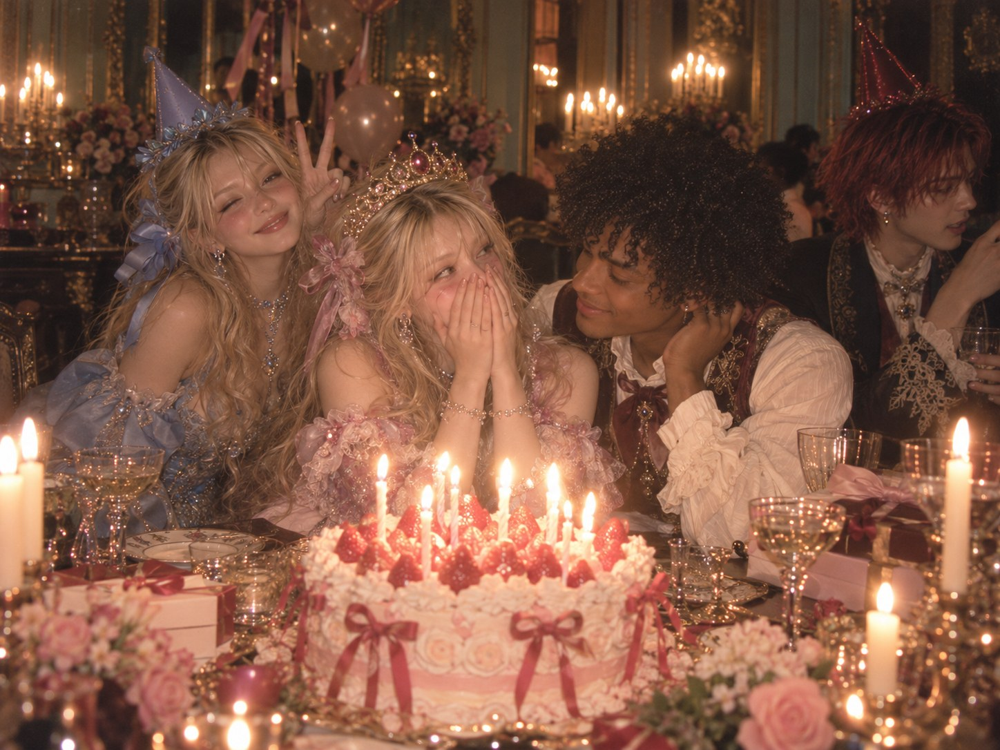
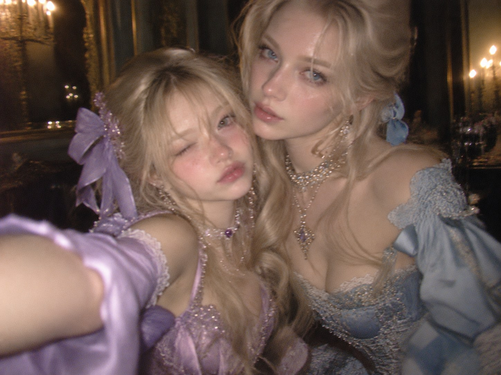

i finally finished decorating my little corner of the internet!!! ♡ i put stickers on EVERYTHING and made myself a strawberry milk while i worked. my desk is covered in ribbons, a notebook that looks lilac in the sunlight, and approximately a million tiny scraps of paper. i think it looks super cute though!!!
i wanna post my photos and silly little discoveries here whenever i remember to. please sign my guestbook if you visit!! okay im gonna go find more sparkly buttons for this page. byeeee ♡
OCT 09 · 4:22 PM
tiny treasures + a weird dream
had the weirdest dream that i was walking through a house with way too many doors. one had a little moon drawn on it. idk what that means. probably nothing :P
i found a keychain at the market though!!! it looks like a star and it's VERY shiny.
OCT 07 · 7:01 PM
big bro teaching me chess

aurelio was teaching me how to play chess today!! he beat me so many times, but i dont care since i got to spend time with him ♡ . he said what he wanted me to take away from this is that every move matters... but i could never remember all those rows and columns ;( like what is "knight to f5" or "king to p10" ??????? i just move the pieces where i please!!
anyways... i guess thats why hes a soldier and im not :P
FROM MY CAMERA ♡
genevieve turned 16!!

happy bday to my sister!!! but man, no one could look at the camera for the life of them TwT
thanks to eloise for realizing i had ZERO photos of everyone!!! she actually posed :L also, anthony baked the cake!! SO DELISH!!!!! <333 i need him to make me more just for myself
OCT 02 · 2:30 PM
things i like lately
little cameras, old postcards, strawberry milk, silly nicknames, notebooks that snap shut, cute websites, glitter stickers, collecting receipts, and not being asked a million questions at dinner.
also! if a page on here ever looks weird, maybe i messed up the HTML again. oops.
FROM MY CAMERA ♡
ready for a ball!!

me and eloise look so pretty here! unfortunately genevieve got too sick and couldnt attend :( not that father was particularly worried....
hehe, you shouldve seen how aurelio blushed when he saw eloise!! >:3
SEP 28 · 8:12 PM
small update!
sorry if things are in weird places. im fixing the links one at a time. the little box at the very bottom is just for me, so please dont mess with it. ♡
about kiana ♡
hi!!! i'm kiana. this is my personal corner of the internet. i like taking pictures of ordinary things and saving stuff i'll probably forget about later.
if you're reading this, i hope you have a good day! :)
guestbook ✎
my little message wall! sign in if you want to leave a note.
✧ a page that doesn't have a link ✧
lost? check your scrapbook scraps
There are three parts. Sign in to see your assigned scrap; compare notes with other investigators.
the wallpaper was never the whole story.THE EDO ARCHIVERESTORING PRIVATE INDEX...
✧ best viewed on a desktop computer ✧THE EDO ARCHIVE // personal archive mirror✧ last updated: unknown ✧
Your recovered evidence is assigned individually. Other investigators may have received different fragments.
Authentication required.
▣ archive_home.html— □ ×
PERSONAL ARCHIVE / UNVERIFIED MATERIAL
PRIVATE INDEX / K.R.
The Edo Archive.
Recovered notes. Unanswered questions. Not for public distribution.
FILE001OPEN
K.R. / FIRST PRIVATE POST01 / 04
IF YOU FOUND THIS— K.R.
i don't know who's going to find this. i don't even know if i want anyone to.
i made this part of the website because i needed somewhere to put everything. i can't keep it in my room anymore, and i definitely can't let my family find it.
the official report says aurelio z. edo was patient zero.
that doesn't make sense.
he wasn't sick when he left. he wasn't investigating any disease. he was looking into something else entirely.
so why does every record of what happened to him start at the hospital?
where was he before that? and why won't anyone tell me?
patient zero is what they called him. it isn't an explanation.
— Kiana
▣ ATTACHMENT / PERSONALEAVE_B08-0217.mp3
RECOVERED AUDIO / K.R.
aurelio's last voicemail
this was the last voicemail aurelio ever left me.
he was supposed to take me to this little bakery i found. i'd been bothering him about it for weeks lol. he said he couldn't make it and promised we'd go another day.
i kept it because i thought it was funny that he actually remembered my order.
i didn't know it would be the last time i'd hear his voice.
— kiana
▶ PLAY ATTACHMENT · EAVE_B08-0217
▧
memory_004.gifImage cannot be displayed. Original file missing.
[ X ]
NOT AN OFFICIAL GOVERNMENT RECORDNOT ALL FILES HAVE BEEN RECOVERED
DIRECTORY / 02
Case files
The first records Kiana collected about Aurelio Z. Edo. Select an entry to read it.
DIRECTORY / 03
Persons of interest
These notes reflect Kiana's understanding at the time they were written. They are not definitive findings.
DIRECTORY / 04
Restricted access
One file was separated from the public index. Kiana left a clue, not a password.
◇
FILE 004 — PERSONAL NOTE
“When they reduced him to a number, I kept his name. When they reduced him to a case, I kept his initials.”
FILE 004 / K.R. / PRIVATE
A note to myself
I keep reading the official statement as though the words might change.
They say Aurelio was the first. That doesn't tell me what he was looking for. It doesn't tell me why he went there.
I need to find the facility records. Start with the place, not the people.
Do not mistake the first recorded death for the beginning.
✎ guestbook.htm— □ ×
SITE / VISITORS / PUBLIC LOG
guestbook ✧
if you found this page, leave something behind. — k.r.
visitor_000
the link on the homepage is broken. is anyone still here?
![An illustrated snapshot of Kiana's desk with her notebook, strawberry milk, and a little calendar]()